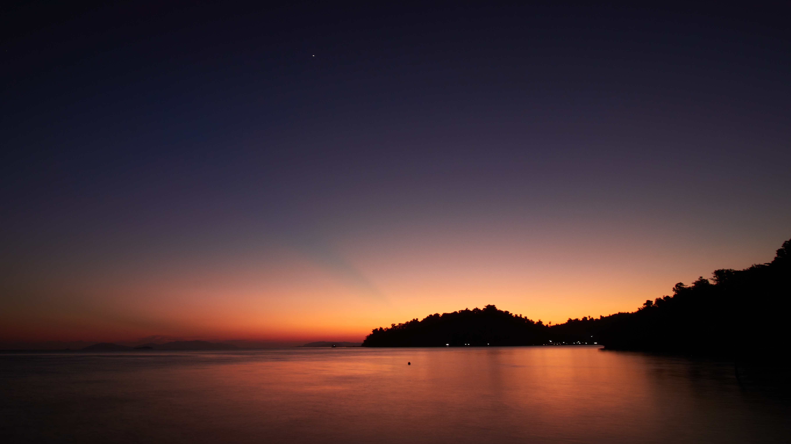
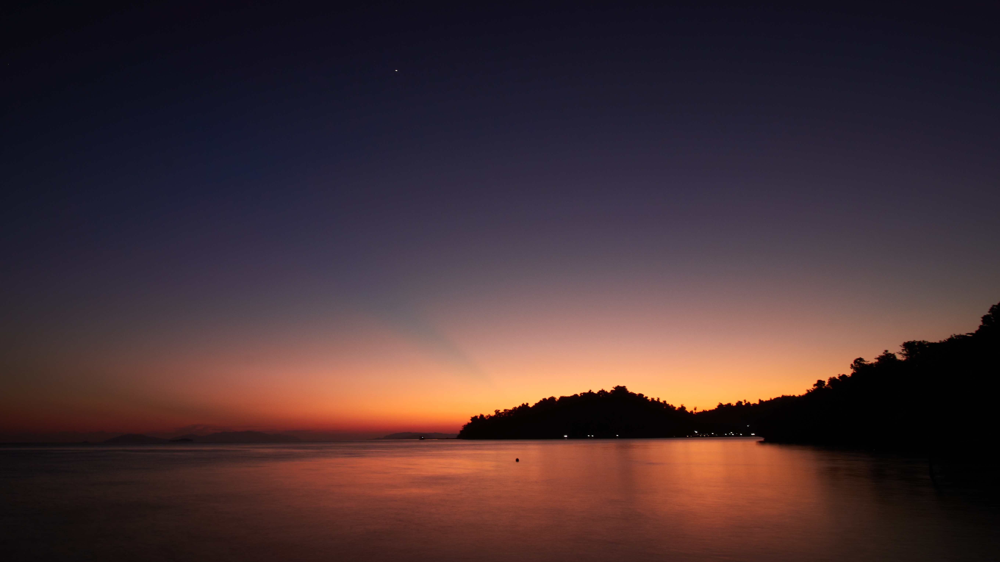

ABOUT ME

IQBAL PHOTO
Iqbal Ishlahiddin is an independent documentary photographer based in Bogor, Indonesia. His personal projects interest primarily focuses on speleology, adventure, ethnicity, and eco-socio themes. His interest in photography started in 2014 when he joined an outdoor activity club at his high school. Each time he does an adventure trip, there is always a desire to document a moment and place.
He started his career in 2017 as a freelance photographer with a specialized focus on Cave Photography. since then, he began to become an independent photographer. Through his photograph, he wanted to visualize the moment happening on certain places with exploring portraits and landscape approach.
He is available for editorial and commercial assignments, especially documentary and portrait photography, photo consultant for NGO, travelling photography, and event documentation.


 
